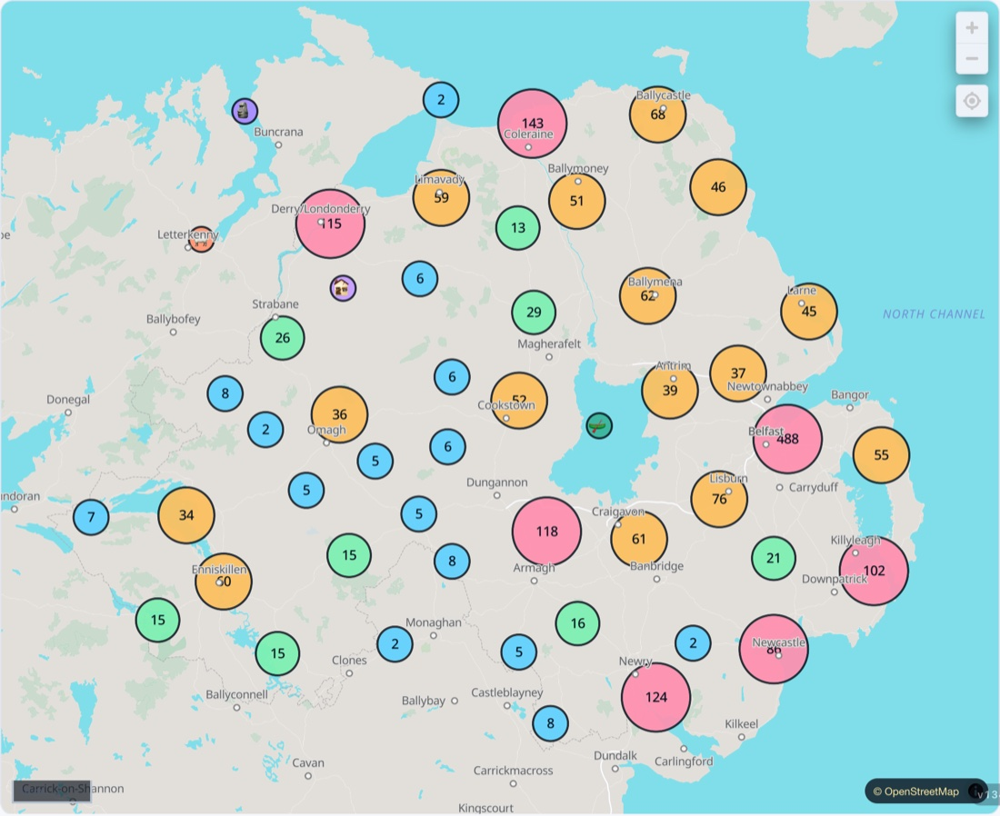

Days Out
Every family place in Northern Ireland, one tap away.
Getting out into the real world is half of childhood — and we built a whole app just for it. Days Out NI maps over 2,000 family places across the country. Here's a taste; tap anything to open the real thing.
The big ones — worth the trip. Swipe, then tap to open in Days Out NI.
Over 2,000 family places, all across Northern Ireland. Tap to explore them in Days Out NI.

🗺️ 2,000+ places Open the full map ↗Indoor runaround for when the weather turns.
Feed a lamb, meet the animals, get happily muddy.
Trampolines, waterparks, ice rinks and adventure.
Why getting out matters
A child built by motion, weather, space and new places is a different child from one built indoors. Days out aren't a treat on top of the real work of childhood — at this age they are the work: the widening world, the shared adventure, the memory made together.
Novelty and nature both lay down more than a nice afternoon. New places stretch a child's sense of the world; green space and movement settle the nervous system and feed sleep, appetite and mood. You rarely regret the day you got out.